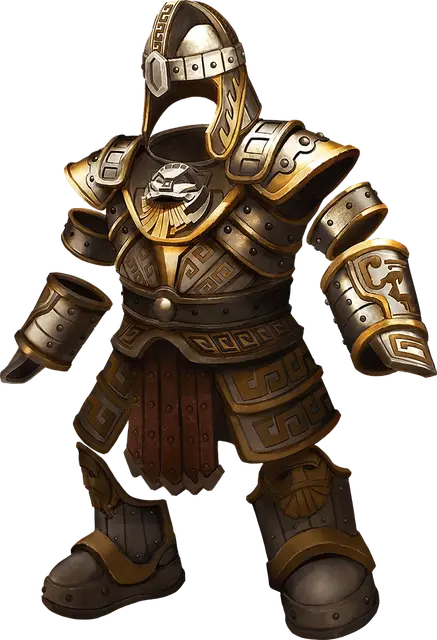

Латы дварфов
Dwarven Plate
Доспех (Латный доспех или Полулаты), очень редкий

Рекомендованная стоимость 40 000 ЗМ
Пока вы носите этот доспех, вы получаете бонус +2 к Классу Защиты. Кроме того, если эффект перемещает вас против вашей воли по поверхности земли, вы можете Реакцией уменьшить расстояние перемещения на значение вплоть до 10 футов.